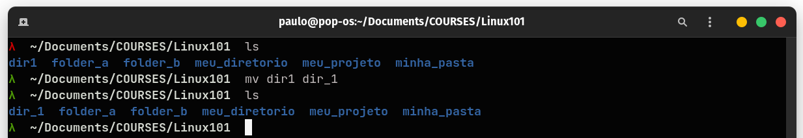

Diretórios
Os comandos a seguir são essenciais na gestão de diretórios no Linux. Importante lembrar que a maioria dos diretórios dentro do Linux irão requerer permissão de superusuário para que possam ser modificados. Esses diretórios em um servidor são de responsabilidade do adminstrador do sistema e estarão fora do escopo de permissões de um usuário, por esse motivo abordaremos operações comuns que podem ser realizadas na nossa pasta de usuário /home.
As funções não serão abordadas em detalhes, serão apresentados os usos de caso mais comuns, para maiores informações de cada função acesse a sua respectiva man page usando o terminal.
Diretório de Trabalho
pwd - print working directory
/home/paulo/Documents/SandBoxListando conteúdo de diretórios
ls - list directory contents
O terminal pode apresentar os resultados com esquemas de cores diferentes a depender do tipo de shell sendo utilizado. De maneira geral, diretórios são destacados com cores (azul neste caso), diferenciando-os de arquivos de texto (branco), imagens (roxo), e arquivos com permissão de execução ou outros formatos especiais (verde).
Utilizando opções é possível modificar o tipo de saída. Por padrão o comando ls não exibe arquivos ou diretórios ocultos, isto pode ser alterado utilizando a opção a. A opção l lista o conteúdo em um formato mais longo e detalhado. É possível combinar opções ou simplesmente listá-las uma após a outra, lembrando sempre de consultar a documentação para o uso de - ou --. Por exemplo, os dois comandos abaixo retornam o mesmo resultado.
Algumas opções também possuem uma descrição literal, sendo mais fáceis de lembrar, embora requeiram mais digitação. A opção a poderia ser substituida por all, essas não podem ser concatenadas e devem ser declaradas separadamente. Nem todas as opções possuem uma forma alternativa no padrão GNU, é sempre bom checar a documentação. O comando abaixo retorna a mesma saída do último que rodamos acima.
É possível listar arquivos específicos passando como argumento para o ls a extensão do arquivo ou parte do nome por exemplo. O comando abaixo lista todos os arquivos com extensão .R, o * é um caractere de expressão regular que indica para o comando que o objetivo é buscar qualquer nome de arquivo desde que este termine com a extensão desejada.
Expressões regulares são muito úteis e utilizadas constantemente em diversos comandos de terminal, falaremos mais em detalhes ao longo do curso. Na imagem abaixo1 seguem alguns coringas que podem ser utilizados para otimizar buscas por arquivos e diretórios no sistema.
Criando diretórios
mkdir [opções] diretórios: cria um ou mais diretórios, você precisa ter permissão de escrita no diretório destino.
Duas das opções mais utilizadas com o mkdir são -m e -p. A opção -mdefine o modo de acesso do diretório a ser criado. A opção -p cria diretórios superiores, caso eles não existam.
Observe as diferenças nas permissões de arquivos para as duas pastas. d refere-se a directory , r a read, w a write e x a execution. Estas três são as classes de acesso/permissão de arquivos e diretórios no Linux, leitura, escrita e execução. O bloco de acesso é formado por três trincas representando as permissões para Usuário, Grupo e Outro respectivamente. O usuário que é o dono do arquivo, o grupo proprietário do arquivo (todo usuário do Linux pertence a um grupo no sistema) e o acesso para outros usuários.
É possível criar múltiplos diretórios com um único comando, basta separar os nomes dos diretórios por espaços.
Também é possível a criação de árvores de diretório com a opção -p para a criação dos diretórios superiores caso estes ainda não tenham sido criados.
Embora criar diretórios possa parecer uma tarefa trivial e que pode ser realizada de maneira visual em qualquer navegador de arquivos de um SO, quando falamos de estruturas de diretórios mais complexas com muitos níveis o terminal é uma enorme ajuda. Por exemplo, imagine que tenhamos um projeto com uma estrutura bem definida de diretórios e subdiretórios, visualmente teríamos que criar cada pasta individualmente, quando no terminal em um único comando toda a estrutura é criada. Veja o exemplo.
Neste caso, passamos para o comando a nossa estrutura na forma de diretorio/{subdiretório}, separando os múltiplos subdiretórios por ,, caso um subdiretório contenha outros subdiretórios, o padrão é o mesmo como pode ser observado no exemplo.
Copiando, Movendo e Deletando diretórios
Copiando
cp [opções] arquivo_fonte arquivo_destino: copia arquivos
cp [opções] arquivo_fonte diretório_destino: copia arquivos para um diretório específico
Neste exemplo a pasta folder_a é copiada para a pasta folder_b. A opção -r indica que a cópia é recursiva, ou seja, inclui também a pasta folder_a, sem o uso desta opção apenas o conteúdo da pasta é copiada, mas não a pasta em si. Essa opção é muito utilizada em todas as operações de modificação de diretórios que veremos a seguir.
Para duplicar uma pasta o comando é o mesmo, observando apenas a mudança do nome da pasta destino.
Movendo e Renomeando
mv [opções] fonte destino
O comando mv é utilizando tanto para mover diretórios quanto para renomeá-los.

No primeiro exemplo, o diretório dir1 foi renomeado para dir_1. No segundo exemplo o diretório folder_a foi movido para folder_b. A opção -i consulta interativamente o usuário antes de mover os arquivos, como neste caso já existia um outro diretório de mesmo nome na pasta destino, o terminal pergunta se o usuário gostaria de sobrescrever o diretório pré-existente. Após a confirmação o comando é executado.
Removendo diretórios
rm [opções] arquivos
Observe o uso da opção -r, essa opção é necessária se a intenção é remover todos os arquivos e o próprio diretório. Sem esta opção os arquivos internos serão excluídos e o diretório será preservado.
rmdir [opções] diretórios
O comando rmdir também pode ser utilizado para excluir diretórios, entretanto, os diretórios precisam estar vazios. Uma combinação com a opção -p permite que diretórios superiores que também estejam vazios sejam removidos.
Observe na estrutura dos diretórios, embora o comando emita uma mensagem de erro informando que a pasta meu_projeto não pode ser excluída por não estar vazia, ele remove com sucesso a pasta html vazia, e o diretório ascendente relatorios, vazio após a exclusão feita anteriormente. Esse comando é muito útil para remoção de estrutura de diretórios de forma automatizada.
Notas de rodapé
Haeder et al., 2010. LPI Linux Certification, Third Edition, O’Reilly Media.p. 101.↩︎